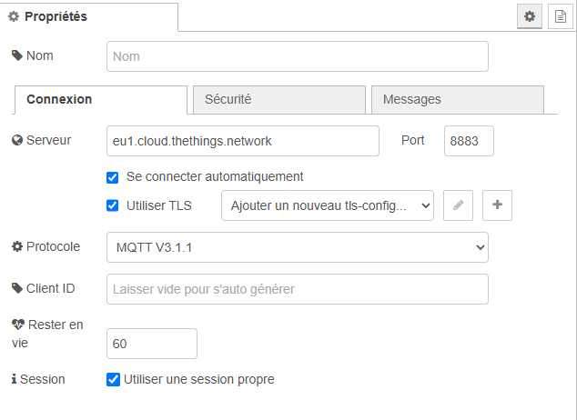
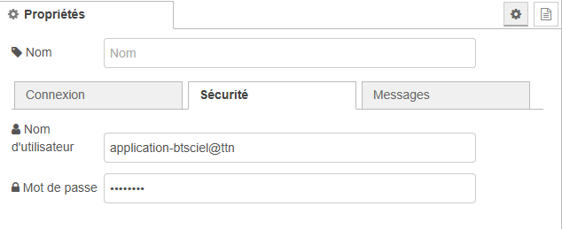
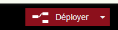
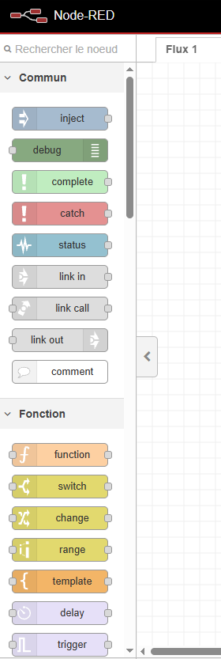
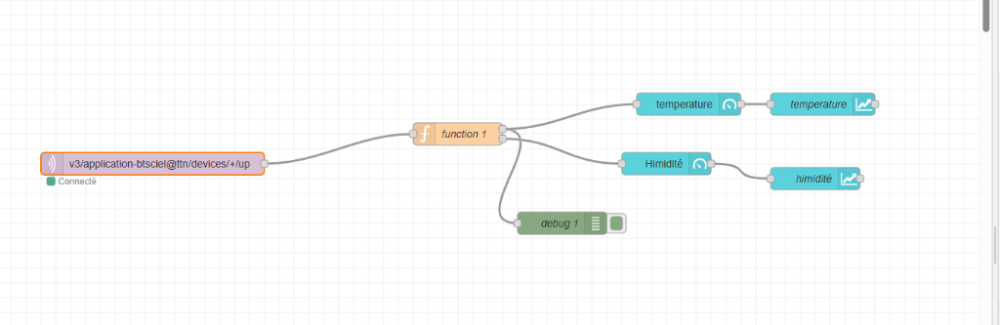
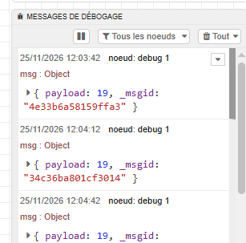

Chaîne IoT complète : Capteur DHT11 → Arduino Uno + Dragino LA66 → Passerelle LPS8-V2 → TTN → Dashboard Web
L'objectif de ce TP est de mettre en service une station météo IoT autonome mesurant la température (en °C) et l'humidité relative (en %) et affichant ces grandeurs en temps réel sur un tableau de bord web (Node-RED Dashboard) hébergé directement sur la passerelle Dragino LPS8-V2 (sans PC allumé 24h/24).
| Élément | Référence / Paramètre | Rôle dans le TP |
|---|---|---|
| Nœud capteur | Arduino Uno + Shield Dragino LA66 + DHT11 | Acquisition T (°C) & HR (%), émission LoRaWAN EU868 (OTAA) |
| Passerelle & Serveur | Dragino LPS8-V2 (dragino-2ad184 — 192.168.1.113) |
Relais radio vers TTN + hébergement local de Node-RED (port 1880) |
| Serveur LoRaWAN | TTN Europe : eu1.cloud.thethings.network |
Gestion réseau, déchiffrement LoRaWAN, exposition des données en MQTT TLS (port 8883) |
| Application TTN | Utilisateur : application-btsciel@ttn |
Topic d'abonnement : v3/application-btsciel@ttn/devices/+/up |
EU868).frm_payload) compacte de 2 octets bruts : bytes[0] = température, bytes[1] = humidité.DevEUI, AppEUI / JoinEUI, AppKey) et déclarez l'équipement dans l'application application-btsciel@ttn (plan Europe 863-870 MHz, LoRaWAN 1.0.3).SoftwareSerial vers l'Arduino Uno) et raccordez la broche DATA du DHT11 sur une broche numérique disponible.AT+SENDB après vérification du Join OTAA. »AT+SENDB dans la datasheet du LA66, gérez le cas d'erreur de lecture isnan() du DHT11, commentez le code et validez dans le moniteur série.
frm_payload de 2 octets. Relevez le RSSI (dBm) et le SNR (dB).
Node-RED est déjà installé sur la passerelle Dragino LPS8-V2 (accès navigateur : http://192.168.1.113:1880).
ssh root@192.168.1.113), l'installation de Node-RED et du Dashboard FlowFuse s'effectue via :
apt update && apt install -y nodejs npm curl npm install -g --unsafe-perm node-red mkdir -p /root/.node-red && cd /root/.node-red && npm install @flowfuse/node-red-dashboard
mqtt in (catégorie Réseau) sur l'espace de travail.v3/application-btsciel@ttn/devices/+/up et sélectionnez la sortie un objet JSON analysé.
eu1.cloud.thethings.network, port 8883, case Utiliser TLS cochée, MQTT V3.1.1.
application-btsciel@ttn et clé API TTN en mot de passe.Cliquez sur le bouton

en haut à droite. Un voyant vert Connecté doit apparaître sous le nœudmqtt in.
Depuis la palette de gauche, assemblez le flux illustré ci-dessous en combinant un nœud function (à 2 sorties : 1 pour la température, 1 pour l'humidité), un nœud debug et quatre widgets du tableau de bord (2 jauges + 2 graphiques).

debug, function…).
mqtt in → function 1 (2 sorties) → jauge & graphique Température, jauge & graphique Humidité + debug 1.functionfunction, passez le nombre de Sorties à 2.msg.payload.uplink_message.frm_payload (chaîne Base64).Buffer.from(..., 'base64'), extrayez bytes[0] (température) et bytes[1] (humidité), puis renvoyez deux messages distincts sous la forme return [msgTemp, msgHum];.msg.payload.uplink_message.frm_payload (encodé en Base64), vérifie que le champ existe et contient au moins 2 octets, décode bytes[0] en température et bytes[1] en humidité, et renvoie deux objets { payload: valeur } sur les sorties 1 et 2. »frm_payload (ex. message de Join) pour éviter toute erreur TypeError dans Node-RED.
@flowfuse/node-red-dashboard)0 à 50 °C) sur la sortie 1, et la jauge + graphique Humidité (plage 0 à 100 %) sur la sortie 2.Après avoir cliqué sur Déployer, ouvrez l'onglet Messages de débogage (icône insecte à droite) pour vérifier l'arrivée périodique des valeurs décodées (toutes les 30 s), puis affichez votre tableau de bord à l'adresse :
http://192.168.1.113:1880/dashboard

payload: 19 reçu toutes les 30 s).Live data sur TTN avec la valeur de frm_payload (Base64), le RSSI et le SNR.Connecté vert) + panneau de débogage montrant la valeur décodée.frm_payload relevée sur TTN, vérifiez à la main (Base64 → hexadécimal → décimal) que les 2 octets correspondent bien aux valeurs affichées sur le Dashboard.